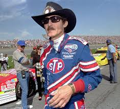
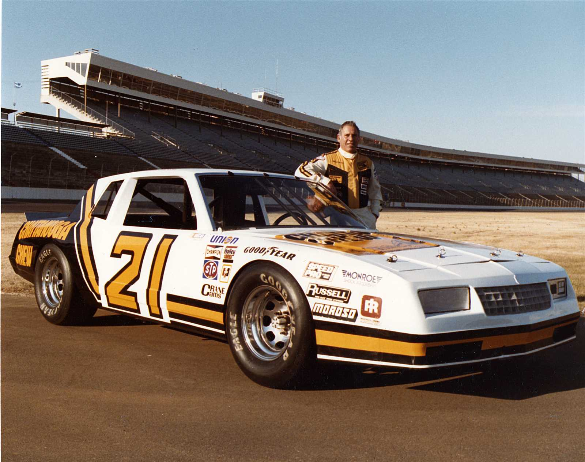

What is oval racing?
Oval racing is a type of racing where cars go around a designated track, mostly on one direction going left , but some races can be on circuit tracks.
What is NASCAR?
NASCAR is a stock car series where the cars are regulated in each division.
NASCAR
-
NASCAR Cup Series
This is where the top drivers in NASCAR compete with the fastest cars.
-
Xfinity Series
This is a second division series where it can be a steping stone to compete in the cup series. The cars are usualy slower than the cup series
-
Craftsman Truck Series
This is a third division series where it can also be seen as a steping stone to compete in the cup and Xfinity series. Like its name suggests the drivers race in trucks
-
NASCAR Youth Series
This is a youth division the aim is to develop younger drivers
-
Richard Petty
With 200 wins, he holds #1 with the most wins.
 -
David Pearson
With 105 wins, he is 2nd on the list of most wins.
 -
Jeff Gordon
With 93 wins, he holds 3rd place for most wins.